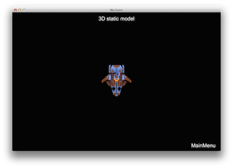
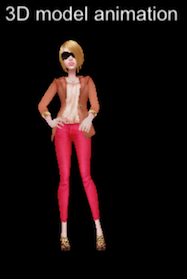
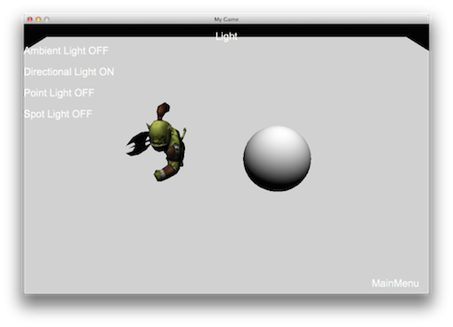
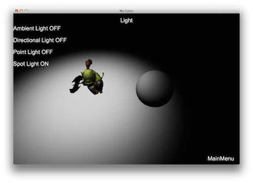
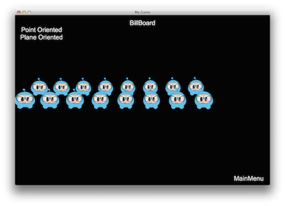

3D
You probably started with Cocos2d-x and know it as a 2D game engine. Starting with version 3, 3D features are being added and refined. 3D gaming is a huge market and Cocos2d-x is adding all the features you need for 3D development. 3D development might be new to you and use some terminology that you are unfamiliar with. There are also additional software tools that you need to become familiar with. Let's jump right in and get our feet wet.
Terminology
When using 3D, there are some commonly used terms that you should be familiar with:
-
Mesh - vertices that construct a shape and texture with which you are rendering.
-
Model - an object that can be rendered. It is a collection of meshes. In our engine
Sprite3D. -
Texture - All surfaces and vertices of a 3D model can be mapped to a texture. In most cases you will have multiple textures per model, unwrapped in a texture atlas.
-
Camera - Since a 3D world is not flat, you need to set a camera to look at it. You get different scenes with different camera parameters.
-
Light - Lightening is applied to make scenes look realistic. To make an object look real, the color should change according to the light. When you face the light it is bright and the opposite is dark. Lightening an object means computing the object's color according to the light.
Sprite3D
Just like 2D games, 3D games also have Sprite objects. Sprite objects are a
core foundation of any game. One of the main differences between Sprite and
Sprite3D is Sprite3D objects have 3 axes it can be positioned on:
x, y and z. Sprite3D works in many ways just like a normal Sprite.
It is easy to load and display a Sprite3D object:
auto sprite = Sprite3D::create("boss.c3b"); //c3b file, created with the FBX-converter
sprite->setScale(5.f); //sets the object scale in float
sprite->setPosition(Vec2(200,200)); //sets sprite position
scene->addChild(sprite,1); //adds sprite to scene, z-index: 1
This creates and positions a Sprite3D object from .c3b file. Example:

Now let's rotate the model in a loop. For this we will create an action and run it:
//rotate around the X axis
auto rotation = RotateBy::create(15, Vec3(0, 360, 0));
//our sprite object runs the action
sprite->runAction(RepeatForever::create(rotation));
To set an anchor point on the Sprite or Sprite3D use:
sprite->setAnchorPoint(Point(0.0f,0.0f));
Attaching 3D models to Sprite3D objects.
Recall above that a 3D model is a collection of meshes. You can attach 3D models
to other 3D models to create rich effects. An example would
be adding a weapon to a character. To do this you need to find the attachment
point where the weapon is to be added. For this use the getAttachNode(attachment_point_name)
function. And then we just add the new model to the attachment point as a child
with addChild(). You can think of this as combining multiple simpler 3D models
to create more complex models. For example adding a model to a Sprite3D object:
auto sp = Sprite3D::create("axe.c3b");
sprite->getAttachNode("Bip001 R Hand")->addChild(sp);

Swap 3D Model
When doing 3D development you might want to make dynamic changes to your model. Perhaps due to power-ups, costume changes or visual cues to notify the user about status changes of your model. If your 3D model is comprised from meshes you can access the mesh data using getMeshByIndex() and getMeshByName(). Using these functions it is possible to achieve effects like swapping a weapon or clothing for a character. Let's take a look at an example of a girl wearing a coat:

We can change the coat that the girl is wearing by changing the visibility of the mesh objects we are using. The following example demonstrates how to do this:
auto sprite = Sprite3D::create("ReskinGirl.c3b");
// display the first coat
auto girlTop0 = sprite->getMeshByName("Girl_UpperBody01");
girlTop0->setVisible(true);
auto girlTop1 = sprite->getMeshByName("Girl_UpperBody02");
girlTop1->setVisible(false);
// swap to the second coat
girlTop0->setVisible(false);
girlTop1->setVisible(true);
The results:

Animation
Sprite3D objects are essential to our game! We have learned how to manipulate them.
However, we might want a more rich experience. Enter animation! To run a 3d
animation, you can use the Animation3D and Animate3D objects. You then create
an Animate3D action using the Animation3D object. Example:
// the animation is contained in the .c3b file
auto animation = Animation3D::create("orc.c3b");
// creates the Action with Animation object
auto animate = Animate3D::create(animation);
// runs the animation
sprite->runAction(RepeatForever::create(animate));
Run the example Programmer Guide Sample code to see this in action! Please keep in mind that 3D animations are exactly the same concepts as 2D. Please refer to Chapter 4 in this guide.
Multiple animations
What do you do when you want to run multiple animations at the same time? Using both the animation start time and animation length parameters you can create multiple animations. The unit for both parameters is seconds. Example:
auto animation = Animation3D::create(fileName);
auto runAnimate = Animate3D::create(animation, 0, 2);
sprite->runAction(runAnimate);
auto attackAnimate = Animate3D::create(animation, 3, 5);
sprite->runAction(attackAnimate);
In the above example there are two animations that get run. The first starts immediately and lasts for 2 seconds. The second starts after 3 seconds and lasts for 5 seconds.
Animation speed
The speed of the animation is a positive integer for forward while a negative speed would be reverse. In this case the speed is set to 10. This means that this animation can be considered to be 10 seconds in length.
Animation blending
When using multiple animations, blending is automatically applied between each animation. The purpose of blending is to create a smooth transition between effects. Given two animations, A and B, the last few frames of animation A and the first few frames of animation B overlap to make the change in animation look natural.
The default transition time is 0.1 seconds. You can set the transition time by using Animate3D::setTransitionTime.
Cocos2d-x only supports linear interpolation between keyframes. This fills in gaps in the curve to ensure a smooth path. If you use other interpolation methods in the model production, our built-in tool, fbx-conv will generate additional keyframes to compensate. This compensation is completed in accordance with the target frame. For more information on fbx-conv please refer to the section discussing it at the end of this chapter.
Camera
Camera objects are an important aspect of 3D development. Since a 3D world is
not flat you need to use a Camera to look at it and navigate around it. Just
like when you are watching a movie and the scene pans to the left or right. This
same concept is applied when using a Camera object. The Camera object inherits
from Node and therefore supports most of the same Action objects. There are two types
of Camera objects: perspective camera and orthographic camera.
The perspective camera is used to see objects having a near to far effect. A perspective camera view might look like this:

As you can see with a perspective camera, objects in the near are larger and objects in the far are smaller.
The orthogonal camera is used to see objects as large distance. You can think about it as converting a 3D world to a 2D representation. An orthogonal camera view might look like this:

As you can see with an orthogonal camera, objects are the same size regardless
of how far away from the Camera object they are. Mini Maps in games are
commonly rendered with an orthogonal camera. Another example would be a top -
down view, perhaps in a dungeon style game.
Camera Use
Don't worry! Camera objects may sound complicated but Cocos2d-x makes them easy.
When using 3D you don't have to do anything special to create a Camera object.
Each Scene automatically creates a default camera, based on the projection
properties of the Director object. If you need more than one camera, you can
use the following code to create one:
auto s = Director::getInstance()->getWinSize();
auto camera = Camera::createPerspective(60, (GLfloat)s.width/s.height, 1, 1000);
// set parameters for camera
camera->setPosition3D(Vec3(0, 100, 100));
camera->lookAt(Vec3(0, 0, 0), Vec3(0, 1, 0));
addChild(camera); //add camera to the scene
Creating orthogonal camera
The default Camera is a perspective camera. If you want to create an
orthogonal camera, it's easy to do by calling:
Camera::createOrthographic();
Example:
auto s = Director::getInstance()->getWinSize();
auto camera = Camera::createOrthographic(s.width, s.height, 1, 1000);
Hiding objects from the camera
Sometimes you don't want to have all objects visible in a Camera view. Hiding
an object from one camera is very easy. Use setCameraMask(CameraFlag) on the
Node and setCameraFlag(CameraFlag) on the Camera. Example:
//Camera
camera->setCameraFlag(CameraFlag::USER1);
//Node
node->setCameraMask(CameraFlag::USER1);
Cubemap Texture
A cube map texture is a collection of six separate square textures that are put onto the faces of an imaginary cube. Most often they are used to display infinitely far away reflections on objects, similar to how sky box displays far away scenery in the background. This is what an expanded cube map might look like:

In Cocos2d-x,you can create a cube map texture in this way:
// create a textureCube object with six texture assets
auto _textureCube = TextureCube::create("skybox/left.jpg", "skybox/right.jpg",
"skybox/top.jpg", "skybox/bottom.jpg", "skybox/front.jpg","skybox/back.jpg");
// set cube map texture parameters
Texture2D::TexParams tRepeatParams;
tRepeatParams.magFilter = GL_NEAREST;
tRepeatParams.minFilter = GL_NEAREST;
tRepeatParams.wrapS = GL_MIRRORED_REPEAT;
tRepeatParams.wrapT = GL_MIRRORED_REPEAT;
_textureCube->setTexParameters(tRepeatParams);
// create and set our custom shader
auto shader = GLProgram::createWithFilenames("cube_map.vert","cube_map.frag");
auto _state = GLProgramState::create(shader);
// bind cube map texture to uniform
_state->setUniformTexture("u_cubeTex", _textureCube);
Skybox
Skybox is a wrapper around your entire scene that shows what the world looks
like beyond your geometry. You might use a Skybox to simulate infinite sky,
mountains and other phenomena.

Creating a Skybox:
// create a Skybox object
auto box = Skybox::create();
// set textureCube for Skybox
box->setTexture(_textureCube);
// attached to scene
_scene->addChild(box);
Light
Light is really important for building mood and ambiance for a game. There are currently 4 lighting techniques supported. You would use different lighting techniques depending upon your needs. Each lighting effect achieves a different result.
Ambient Light
An AmbientLight object will apply light evenly for everything in the scene.
Think of lighting in an office environment. The lights are overhead and when you
look at objects around the office you see them in the same light. Example:
auto light = AmbientLight::create (Color3B::RED);
addChild(light);
This produces:

Directional Light
DirectionalLight is often used to simulate a light source such as
sunlight. When using DirectionalLight keep in mind that is has the same density
no matter where you are in relationship to it. Also think about being outside on
a sunny day with the sun beaming down on you. When you look directly at the sun,
it is an intense light even if you move a few steps in any direction. Example:
auto light = DirectionLight::create(Vec3(-1.0f, -1.0f, 0.0f), Color3B::RED);
addChild(light);
This produces:

Point Light
PointLight is often used to simulate the effect of light bulbs, lamps
or torches. The direction of a PointLight is from the lighted position to the
PointLight. Keep in mind that the density is different depending upon the
distance from the PointLight. What does this mean? If you are close to the
start of the PointLight it will be really strong. If you are towards the end
of the PointLight it will be dim. PointLight also becomes weaker the larger
the distance it is projected. Example:
auto light = PointLight::create(Vec3(0.0f, 0.0f, 0.0f), Color3B::RED, 10000.0f);
addChild(light);
This produces:

Spot Light
A SpotLight object is often used to simulate a flashlight. This means that it
is emitted in just one direction in the shape of a cone. Think about the power
going out in your house. You may need to take a flashlight down into your basement
to reset your circuits. The flashlight produces a cone shaped lighting pattern
and you can only see objects inside that cone pattern. Another example is in dark,
dungeon based games where your path is light by torches. You can only see the
limited cone shape that those torches emit. Example:
auto spotLight = SpotLight::create(Vec3(-1.0f, -1.0f, 0.0f), Vec3(0.0f, 0.0f, 0.0f),
Color3B::RED, 0.0, 0.5, 10000.0f) ;
addChild(spotLight);
This produces:

Light Masking
What do you use for lights in your kitchen or living room? Probably a few lamps? Do you ever notice that perhaps you only use a lamp to light up a certain portion of the room? You are essentially applying a lighting mask!
A lighting mask is used on a Node to only apply a particular lighting source
to it. For example, if you had multiple lights in a Scene, a Node can only be
lighted by one of the lights instead of all three. You can use setLightFlag(LightFlag)
to control which Node objects are effected by the light. It is important to note
that all lighting sources are rendered in a single pass. Due to mobile platform
performance issues the use of multiple light sources is not recommended. The
default maximum is 1. If you want to open multiple light sources you must define
the following keys in info.plist:
<key> cocos2d.x.3d.max_dir_light_in_shader </key>
<integer> 1 </integer>
<key> cocos2d.x.3d.max_point_light_in_shader </key>
<integer> 1 </integer>
<key> cocos2d.x.3d.max_spot_light_in_shader </key>
<integer> 1 </integer>
Terrain
Terrain is an important component in 3D game. A texture is used to stand for the
height map. And up to 4 textures can be used to blend the details of the terrain,
grass, road, and so on.
HeightMap
HeightMap objects are the core of the terrain. Different from the common image
the height map represents the height of vertices. It determines the terrain's
geometry shape.
DetailMap
DetailMap objects are a list of textures determining the details of the terrain,
up to four textures can be used.
AlphaMap
AlphaMap objects are an image whose data is the blend weights of detail maps.
The blending result is the final terrain's appearance.
LOD policy
Terrain uses an optimization technique called Level Of Detail or LOD.
This is a rendering technique that reduces the number of verticies (or triangles)
that are rendered ,for an object, as its distance from camera increases. Users
can set the distance to the Camera by calling the
Terrain::setLODDistance(float lod1, float lod2, float lod3) method.
Neighboring chunks of Terrain objects, which have different LOD may cause
the crack artifacts. Terrain provide two functions to avoid them:
Terrain::CrackFixedType::SKIRT
Terrain::CrackFixedType::INCREASE_LOWER
Terrain::CrackFixedType::SKIRT will generate four, skirt-like meshes at each edge of the chunk.
Terrain::CrackFixedType::INCREASE_LOWER will dynamically adjust each chunks indices to seamlessly connect them.
How to create a terrain
Creating a Terrain takes a few steps. Example:
The following code snippet is creating a player and place it on the terrain:
auto player = Sprite3D::create("chapter9/orc.c3b");
player->setScale(0.08);
player->setPositionY(terrain->getHeight(player->getPositionX(),player->getPositionZ()));

- create all
DetailMapobjects (up to four), you need pass theDetailMapobjects to the Terrain::DetailMap struct:
Terrain::DetailMap r("dirt.dds");
Terrain::DetailMap g("grass.dds");
Terrain::DetailMap b("road.dds");
Terrain::DetailMap a("greenSkin.jpg");
- to create a
TerrainDatavariable with detail maps, you need to specify the terrain's height map file path and alpha map file path:
Terrain::TerrainData data("chapter9/heightmap16.jpg","TerrainTest/alphamap.png", r, g, b, a);
- pass the
TerrainDataobject to Terrain::create, the last parameter determines the LOD policy (as talked about above). Example:
_terrain = Terrain::create(data, Terrain::CrackFixedType::SKIRT);
- If you set a
Terrainobjects camera mask and add it to aNodeor aScene, be careful. WhenTerrainis added into aNodeor aScene, you can not use transform(translate, scale) on it anymore. If you do this after calling addChild(), some of the terrain's methods may calculate wrong results.
Get Terrain Height
Use the method Terrain::getHeight(float x, float z, Vec3 * normal= nullptr) to
get the specified position's height. This method is very useful when you want to
put a Sprite3D object or any Node on the terrain's surface.
Ray-Terrain intersection test
A Ray-Terrain intersection test will calculate the intersection point by giving a specified position.
Terrain::CrackFixedType::SKIRT will generate four skirt-like meshes at each chunks edge.
Terrain::CrackFixedType::INCREASE_LOWER will dynamically adjust each chunks index to seamlessly connect them.
3D Software Packages
3D Editors
3D editors are collections of tools that you use to build your 3D graphics. There are both commercial and free tools available. These are the most popular editors:
Most 3D editors usually save files in a common collection of formats for easy use within other editors as well as a standard way for game engines to import your files for use.
Cocos2d-x Provided Tools
Cocos2d-x provides tools to help with converting your 3D models to formats that Cocos2d-x uses to provide access to all aspects of your 3D files.
fbx-conv command-line tool
fbx-conv allows the conversion of an FBX file into the Cocos2d-x proprietary formats. FBX is the most popular 3D file format and is being supported by all the major editors. fbx-conv exports to .c3b by default. It is simple to use with just a few parameters:
fbx-conv [-a|-b|-t] FBXFile
The possible switches are:
- -?: show help
- -a: export both text and binary format
- -b: export binary format
- -t: export text format
Example:
fbx-conv -a boss.FBX
There are a few things to note about fbx-conv: The model needs to have a material that contains at least one texture it only supports skeletal animation. it only supports one skeleton object no multiple skeleton support yet. You can create a 3d scene by exporting multiple static model * The maximum amount of vertices or indices a mesh is 32767
3D File Formats
Cocos2d-x currently supports two 3d file formats:
- Wavefront Object files: .obj files
- Cocos2d-x 3d ad-hoc format:c3t, c3b files.
The Wavefront file format is supported because it has been widely adopted by 3D editors and it is extremely easy to parse. It is, however, limited and doesn't support advanced features like animations.
On the other hand, c3t and c3b are Cocos2d-x proprietary file formats that
were created to allow animations, materials and other advanced 3d features.
The suffix t means text, while the suffix b means binary. Developers
must use c3b for production because it is more efficient. In case you want to
debug the file and track its changes in Git or any other version control system,
you should c3t instead. Also, Animation3D objects can be created with c3b
or c3t files as it is not possible to animate obj files.
Advanced Topics
BillBoard
You may not have heard of a BillBoard before. No, I'm not talking about an
advertisement on the side of a highway. Rather, Billboard is a special Sprite
that always faces the Camera. As you rotate the Camera, Billboard objects
also rotate. Using aBillBoard is a very common rendering technique. Take for
example a downhill skiing game. Any trees, rocks or other objects that are in
the way of the skier are Billboard objects.
This is how Camera and Billboard objects relate to each other.

Billboard objects are easy to create. BillBoard is derived from Sprite, so
it supports most of the features as a Sprite object. We can create one using the
following create method:
auto billboard = BillBoard::create("Blue_Front1.png", BillBoard::Mode::VIEW_POINT_ORIENTED);
You can also create a Billboard object for the camera XOY plane (like the plane
of a floor) by changing the BillBoard objects mode:
auto billboard = BillBoard::create("Blue_Front1.png", BillBoard::Mode::VIEW_PLANE_ORIENTED);
These create methods look a little different since an additional parameter of BillBoard::Mode is passed in. There are two BillBoard::Mode types, VIEW_POINT_ORIENTED and VIEW_PLANE_ORIENTED.
VIEW_POINT_ORIENTED is where the BillBoard object is oriented to the
Camera. Example:

VIEW_PLANE_ORIENTED is where the BillBoard is oriented towards the XOY plane
of the Camera. Example:

You can also set properties for a BillBoard just like with any other Node.
These include, but are not limited to: scale, position, rotation.
Examples:
billboard->setScale(0.5f);
billboard->setPosition3D(Vec3(0.0f, 0.0f, 0.0f));
billboard->setBlendFunc(BlendFunc::ALPHA_NON_PREMULTIPLIED);
addChild(billboard);
ParticleSystem3D
In Chapter 7, you learned about 2D particles and how to use them. When you use 3D you might also want to use a 3D particle system for rich, advanced effects. Many of the same concepts apply for a 3D particle system as they did with a 2D particle system. Cocos2d-x currently supports Particle Universe (http://www.fxpression.com/) for particle system construction. Particle Universe provides a special particle editor that allows you to quickly and easily set up a variety of effects, such as explosions, fire, blood and other special effects. This editor uses a pu file extension when saving or exporting.
When you are happy with your particle and ready to use it in code, exporting to
its built-in format of pu is enough! Cocos2d-x supports this format directly.
Also, as ParticleSystem3D is derived from Node, it supports most of the
features that Node supports. PUParticleSystem3D is an object type specifically
for dealing with Particle Universe particles. PUParticleSystem3D offers two
ways for creating particles.
The first way is to build a particle by passing in a Particle Universe file and its corresponding material file. Remember from Chapter 7 that a material file is what describes the particle. This is required. Example:
auto ps = PUParticleSystem3D::create("lineStreak.pu", "pu_mediapack_01.material");
ps->startParticleSystem();
this->addChild(ps);
The second way is to build the particle system only by passing a particle universe file. When you create a particle this way, besides loading the particle, all material files in the same folder as the particle file will automatically be loaded. Here is an example:
auto ps = PUParticleSystem3D::create("electricBeamSystem.pu");
ps->startParticleSystem();
this->addChild(ps);
Note: using this method will result in an increase in loading times and consumes more memory since everything will be loaded. If you know what material you want to use and don't need to load everything, using the first method would be preferred.
In these images below, on the left is the particle in particle universe, while on the right is the effect running in Cocos2d-x:


Once you have your particle, you can interact with it it fairly obvious ways. You can interact with with the particle system as a whole, starting, stopping, pausing, resuming and obtaining the total number of particles:
virtual void startParticleSystem() override;
virtual void stopParticleSystem() override;
virtual void pauseParticleSystem() override;
virtual void resumeParticleSystem() override;
virtual int getAliveParticleCount() const override;
As PUParticleSystem3D is derived from Node you can run Action and Sequence
objects on your particles! Example:
auto ps = PUParticleSystem3D::create("blackHole.pu", "pu_mediapack_01.material");
ps->setPosition(-25.0f, 0.0f);
auto moveby = MoveBy::create(2.0f, Vec2(50.0f, 0.0f));
auto moveby1 = MoveBy::create(2.0f, Vec2(-50.0f, 0.0f));
ps->runAction(RepeatForever::create(Sequence::create(moveby, moveby1, nullptr)));
ps->startParticleSystem();
Combining Action and Sequence objects could produce an interesting black hole
effect:

Just like with other 3D objects you can also combine 3D objects using AttachNode.
This allows for creating rich models. Example:
auto sprite3d = Sprite3D::create("orc.c3b");
sprite3d->setPosition3D(Vec3(0.0f, 0.0f, 0.0f));
sprite3d->setRotation3D(Vec3(0.0f, 180.0f, 0.0f));
auto animation = Animation3D::create("orc.c3b");
if (animation)
{
auto animate = Animate3D::create(animation);
sprite3d->runAction(RepeatForever::create(animate));
}
auto handler = PUParticleSystem3D::create("lightningBolt.pu");
handler->startParticleSystem();
sprite3d->getAttachNode("Bip001 L Hand")->addChild(handler);
this->addChild(sprite3d);